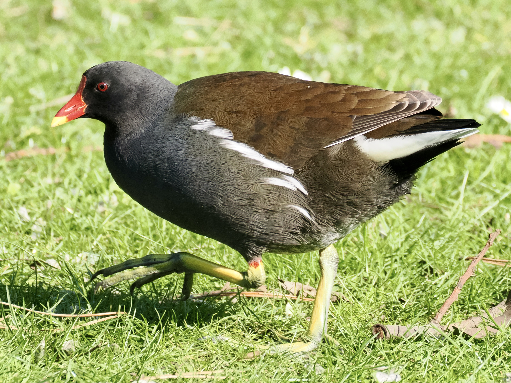
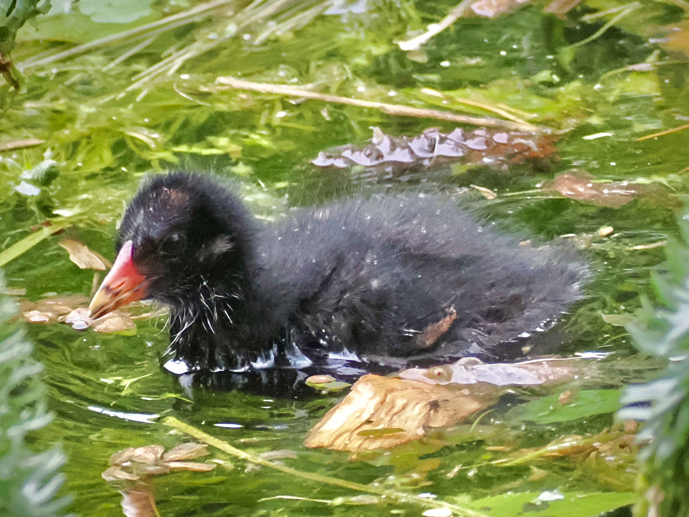
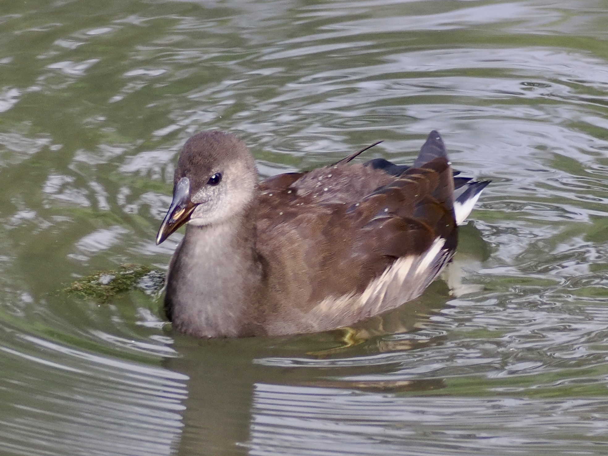

Eurasian Moorhen
Gallinula chloropus
Order: Gruiformes
Family: Rallidae

A black chickenlike bird with a brown back and long greenish yellow legs. Bill is red with a yellow tip. The red of the eye is often not visible. Tail flicks while walking.

Chick is famously bald. Wiggles its bare chicken wings when begging for food. Somehow, the Coot chick is still uglier.

Older juveniles are adult-sized, but brown with whitish cheeks. The red of the bill is also undeveloped.